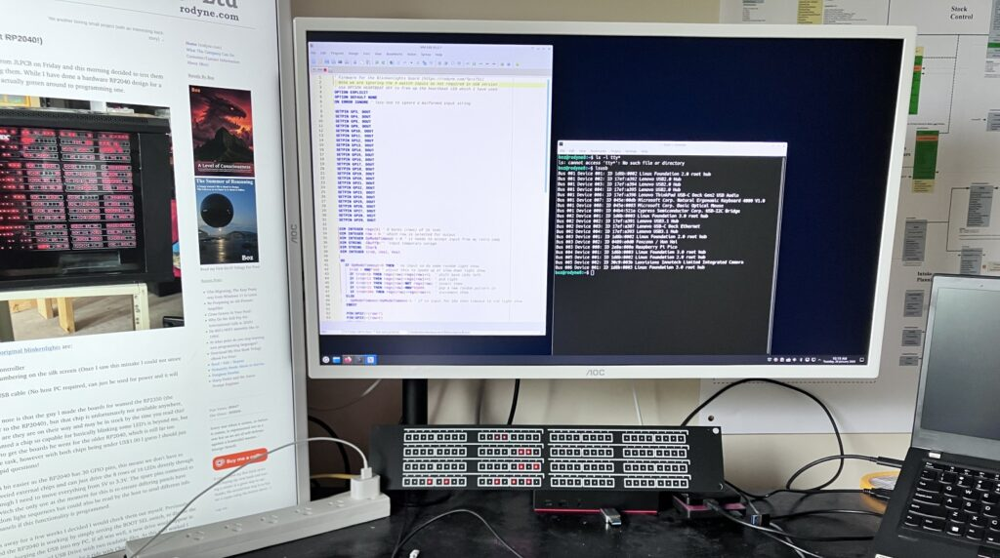

I guess it is early days, but generally I would class the migration as a great success. There are not many caveats in this, I went hard this first week, and it can do all the things I want it to do, and more, also it all feels stable. To be safe I have initiated auto-saves on most of my programs like LibreOffice Writer (I need to stop saying OpenOffice!) and I’m doing a twice daily backup rather than my usual daily one.

Wake up time from sleep is as good as my old windows, as is startup from cold. The advice from my AI guru Gemini has surprisingly continued to be concise and accurate, with none of the condescending, “RTFM” or “you must be a fucking retard” answers you obligatory got with every question asked on reddit or stackoverflow. So no show stopping issues, but a few annoyances.
Annoyance 1. (edit – fixed itself) When you click on the Thunderbird email shortcut, it shows the program start to run (cursor changes to Thunderbird icon briefly) but no window appears, then I wait a few seconds try again and the same thing happens, third time you do it the application pops up. The email data is on a different partition of the SSD which I do mount at boot, but AI seems to think it is something to do with a thing called “snap” a security-sandboxy-thing that Kubuntu implements. I generally only read my email once in the morning now, and everything I get is spam so not a biggy, just an annoyance, that doesn’t seem to happen with the other apps.
Annoyance 2. (edit – fixed) Window sizes and defaults. The monitor I work with for writing documents is off to the left of my main monitor and is orientated in portrait, the main one (same model hardware) is landscape. A couple of times writer has opened on the landscape monitor with the position way off the top of the monitor so I cannot see or access the menus. The first time I saw this I assumed it had crashed by not redrawing the menus, but they were all hidden off the top somewhere. Right clicking the icon on the taskbar allows you to recover from this annoyance, and my AI Bestie says I can configure a “special application setting” which looks easy, but other apps seem to remember so it might just be LibreOffice.
Annoyance 3. I plugged an RP2040 microprocessor development board into my ThinkPad dock, all worked fine as expected, but when I unplugged it, the USB on the dock failed and my mouse and keyboard would not respond. The ThinkPad keyboard and track-pad however still worked, unplugging the docks cable and plugging it back in did not fix it, but a reboot did. I did not get the same issue when I plugged the development board directly into the laptop.
So much with the minor annoyances, I am already over them, my Bestie’s recommended fixes worked fine, and I am totally stoked by how much just works properly ‘out of the box’. Now lets get onto whats better.
Lazarus/Free Pascal was always a second-tier programming language to Delphi as all my major client production systems were written in Delphi. I will not be re-creating a 200,000 line winery production system in Lazarus as it would take forever and I doubt anybody would want it anyway, but I do have a lot of small utility programs written in Lazarus and compiled for Windows. Lazarus is a fast developing system and the packages on Kubuntu are out of date, but the install is quite clear to download the latest stable deb packages and install them using the CLI (Command Line Interface – See I’m becoming a geek already!) This worked fine and added Lazarus to my programming start menu, and it all started without issue. The major issue to convert my programs are to change the widget sets from Win32 to QT5 which was simply an options change, and my first hello world program was 3 minutes later.
My last thing to test is my VS Code C programming environment, however I might take the opportunity to move to a simpler / more Linux friendly option as I have no current projects I need to work in C.
Update 28 Jan 2026
As you can see above, a few of my original annoyances have already been solved, though I am not plugging my PICO into the hub again just in case. For my C development environment I went with VSCodium (a version of VSCode minus the Microsoft specific stuff) as I am at least familiar with that IDE and it seems to be the best supported for ESP32/RP235x my two current micro’s of choice. Both SDK’s loaded and LED’s blinked, and the VSCode environment feels the same bloated and confused as it did in windows.
So all is going well, the BIG downside to Linux in the past was the command line stuff, which seemed to change with the season, or whatever new program, environment was in vogue. But I find I am not going into it much and that BASH hasn’t changed much in the last 30 years, so at least I can navigate around most things, and understand the commands that the AI is telling me. Of course if I don’t understand then I can at least now get anything explained or read the referenced documents; This seems like a better way to work.